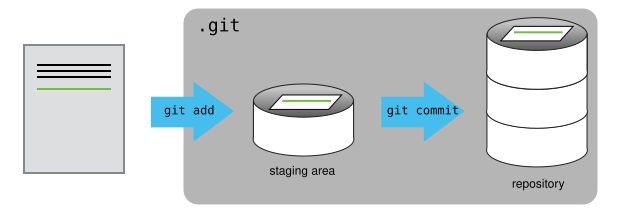
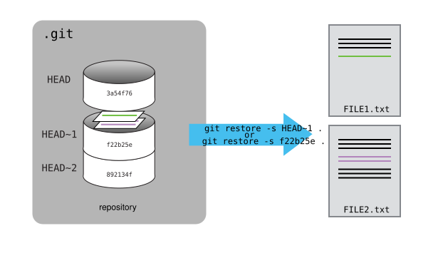
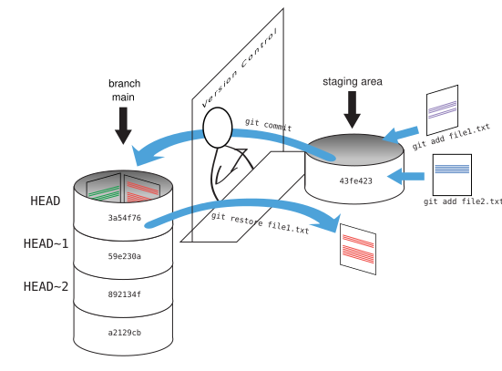

Day 2
For this part, you will be using Fox, not your own computer. After logging in to Fox, choose on of the int- nodes and log in to that.
If you have have not yet done what is written for Day 1 of this module you have to do this first!
Using git on Fox
As we did on day 1, we need to enable the use of git:
module load git/2.50.1-GCCcore-14.3.0Now run git --version to verify that you have access to git.
Where to do the work
Start working in a folder such as /fp/homes01/u01/ec-username/BIOS-IN5410 replacing ec-username with your Educloud username.
Getting started with git
Jimmy and Alfredo have been hired by Ratatouille restaurant to build the best recipes archive ever. They want to work on it at the same time, but have run into problems before: taking turns means a lot of waiting, and emailing copies back and forth means changes get lost, overwritten, or duplicated.
A colleague suggests using version control. With version control, nothing that is committed is ever lost, so you can always go back to see who changed what and when, and undo changes if needed. It also warns you when two people’s changes conflict. This is useful even when working alone: version control is the lab notebook of the digital world, and works for anything that changes over time, from code and papers to small data sets.
Over the next sessions we will follow Jimmy and Alfredo as they set up their recipes archive with Git.
Work through the lesson episodes below.
NOTES
- If you are short on time, please skip the exercises, these are marked with a pencil symbol (✏️) at the left of the title.
- After today, do not delete the
recipesfolder, you will need it again for the next session
Creating a Repository
Adapted from the Software Carpentry episode Creating a Repository.
In the commands below, replace ec-username with your Educloud username.
Once Git is configured, we can start using it.
We will help Alfredo with his new project, create a repository with all his recipes.
First, let’s create a new directory in the /fp/homes01/u01/ec-username/BIOS-IN5410 folder for our work and then change the current working directory to the newly created one:
$ cd /fp/homes01/u01/ec-username/BIOS-IN5410
$ mkdir recipes
$ cd recipesThen we tell Git to make recipes a repository -- a place where Git can store versions of our files:
$ git initIt is important to note that git init will create a repository that can include subdirectories and their files—there is no need to create separate repositories nested within the recipes repository, whether subdirectories are present from the beginning or added later. Also, note that the creation of the recipes directory and its initialization as a repository are completely separate processes.
If we use ls to show the directory’s contents, it appears that nothing has changed:
$ lsBut if we add the -a flag to show everything, we can see that Git has created a hidden directory within recipes called .git:
$ ls -a. .. .gitGit uses this special subdirectory to store all the information about the project, including the tracked files and sub-directories located within the project’s directory. If we ever delete the .git subdirectory, we will lose the project’s history.
We can now start using one of the most important git commands, which is particularly helpful to beginners. git status tells us the status of our project, and better, a list of changes in the project and options on what to do with those changes. We can use it as often as we want, whenever we want to understand what is going on.
$ git statusOn branch main
No commits yet
nothing to commit (create/copy files and use "git add" to track)If you are using a different version of git, the exact wording of the output might be slightly different.
Tracking Changes
Adapted from the Software Carpentry episode Tracking Changes.
First let’s make sure we’re still in the right directory. You should be in the recipes directory.
$ cd /fp/homes01/u01/ec-username/BIOS-IN5410/recipesLet’s create a file called guacamole.md that contains the basic structure of our first recipe. A file editor is a command that opens a specified file in the current shell and allows you to edit it; the file is created if it does not exist.
In this lesson, we’ll use nano as a file editor, but you can use whatever editor you like. In particular, this does not have to be the core.editor you set globally earlier during “Setting Up Git”. For a refresher on text editors, check out “Which Editor?” in The Unix Shell lesson.
$ nano guacamole.mdType the text below into the guacamole.md file:
# Guacamole
## Ingredients
## InstructionsNow we need to save the file and exit the editor. In the case of nano, many shortcuts are available via the ^ (symbolizing Ctrl) key. For example, to save and exit the editor you should use the sequence: Ctrl+X to exit, Y to save, and finally Enter to validate.
Jimmy and Alfredo are using Markdown to write their recipes. It is a simple plain-text format for writing lists, links and other things that might go into a web page.
| Markdown code | Rendered output |
|---|---|
|
|
|
|
|
|
|
A Level-1 Heading |
|
A Level-2 Heading (etc.) |
Let’s verify that the file was properly created by running the list command (ls):
$ lsguacamole.mdThe cat command prints the content of a file in the shell. We can use it to visualize the 3 lines we added to guacamole.md:
$ cat guacamole.md# Guacamole
## Ingredients
## InstructionsIf we check the status of our project again, Git tells us that it’s noticed the new file:
$ git statusOn branch main
No commits yet
Untracked files:
(use "git add <file>..." to include in what will be committed)
guacamole.md
nothing added to commit but untracked files present (use "git add" to track)The “untracked files” message means that there’s a file in the directory that Git isn’t keeping track of. We can tell Git to track a file using git add:
$ git add guacamole.mdand then check that the right thing happened:
$ git statusOn branch main
No commits yet
Changes to be committed:
(use "git rm --cached <file>..." to unstage)
new file: guacamole.md
Git now knows that it’s supposed to keep track of guacamole.md, but it hasn’t recorded these changes as a commit yet. To get it to do that, we need to run one more command:
$ git commit -m "Create initial structure for a Guacamole recipe"[main (root-commit) f22b25e] Create initial structure for a Guacamole recipe
1 file changed, 1 insertion(+)
create mode 100644 guacamole.mdWhen we run git commit, Git takes everything we have told it to save by using git add and stores a copy permanently inside the special .git directory. This permanent copy is called a commit (or revision) and its short identifier is f22b25e. Your commit may have another identifier.
We use the -m flag (for “message”) to record a short, descriptive, and specific comment that will help us remember later on what we did and why. If we just run git commit without the -m option, Git will launch nano (or whatever other editor we configured as core.editor) so that we can write a longer message.
Good commit messages start with a brief (<50 characters) statement about the changes made in the commit. Generally, the message should complete the sentence “If applied, this commit will”
If we run git status now:
$ git statusOn branch main
nothing to commit, working tree cleanit tells us everything is up to date. If we want to know what we’ve done recently, we can ask Git to show us the project’s history using git log:
$ git logcommit f22b25e3233b4645dabd0d81e651fe074bd8e73b
Author: Alfredo Linguini <a.linguini@ratatouille.fr>
Date: Thu Aug 22 09:51:46 2013 -0400
Create initial structure for a Guacamole recipegit log lists all commits made to a repository in reverse chronological order. The listing for each commit includes the commit’s full identifier (which starts with the same characters as the short identifier printed by the git commit command earlier), the commit’s author, when it was created, and the log message Git was given when the commit was created.
If we run ls at this point, we will still see just one file called guacamole.md. That’s because Git saves information about files’ history in the special .git directory mentioned earlier so that our filesystem doesn’t become cluttered (and so that we can’t accidentally edit or delete an old version).
Now suppose Alfredo adds more information to the file. (Again, we’ll edit with nano and then cat the file to show its contents; you may use a different editor, and don’t need to cat.)
$ nano guacamole.md
$ cat guacamole.md# Guacamole
## Ingredients
* avocado
* lemon
* salt
## InstructionsWhen we run git status now, it tells us that a file it already knows about has been modified:
$ git statusOn branch main
Changes not staged for commit:
(use "git add <file>..." to update what will be committed)
(use "git restore <file>..." to discard changes in working directory)
modified: guacamole.md
no changes added to commit (use "git add" and/or "git commit -a")The last line is the key phrase: “no changes added to commit”. We have changed this file, but we haven’t told Git we will want to save those changes (which we do with git add) nor have we saved them (which we do with git commit). So let’s do that now. It is good practice to always review our changes before saving them. We do this using git diff.
$ git diffdiff --git a/guacamole.md b/guacamole.md
index df0654a..315bf3a 100644
--- a/guacamole.md
+++ b/guacamole.md
@@ -1,3 +1,6 @@
# Guacamole
## Ingredients
+* avocado
+* lemon
+* salt
## InstructionsThe output is cryptic because it is actually a series of commands for tools like editors and patch telling them how to reconstruct one file given the other. If we break it down into pieces:
- The first line tells us that Git is producing output similar to the Unix
diffcommand comparing the old and new versions of the file. - The second line tells exactly which versions of the file Git is comparing;
df0654aand315bf3aare unique computer-generated labels for those versions. - The third and fourth lines once again show the name of the file being changed.
- The remaining lines are the most interesting, they show us the actual differences and the lines on which they occur. In particular, the
+marker in the first column shows where we added a line.
After reviewing our change, it’s time to commit it:
$ git commit -m "Add ingredients for basic guacamole"On branch main
Changes not staged for commit:
(use "git add <file>..." to update what will be committed)
(use "git restore <file>..." to discard changes in working directory)
modified: guacamole.md
no changes added to commit (use "git add" and/or "git commit -a")Whoops: Git won’t commit because we didn’t use git add first. Let’s fix that:
$ git add guacamole.md
$ git commit -m "Add ingredients for basic guacamole"[main 34961b1] Add ingredients for basic guacamole
1 file changed, 3 insertions(+)Git insists that we add files to the set we want to commit before actually committing anything. This allows us to commit our changes in stages and capture changes in logical portions rather than only large batches. For example, suppose we’re adding a few citations to relevant research to our thesis. We might want to commit those additions, and the corresponding bibliography entries, but not commit some of our work drafting the conclusion (which we haven’t finished yet).
To allow for this, Git has a special staging area where it keeps track of things that have been added to the current changeset but not yet committed.
If you think of Git as taking snapshots of changes over the life of a project, git add specifies what will go in a snapshot (putting things in the staging area), and git commit then actually takes the snapshot, and makes a permanent record of it (as a commit). If you don’t have anything staged when you type git commit, Git will prompt you to use git commit -a or git commit --all, which is kind of like gathering everyone to take a group photo! However, it’s almost always better to explicitly add things to the staging area, because you might commit changes you forgot you made. (Going back to the group photo simile, you might get an extra with incomplete makeup walking on the stage for the picture because you used -a!) Try to stage things manually, or you might find yourself searching for “git undo commit” more than you would like!

Let’s watch as our changes to a file move from our editor to the staging area and into long-term storage. First, we’ll improve our recipe by changing ‘lemon’ to ‘lime’:
$ nano guacamole.md
$ cat guacamole.md# Guacamole
## Ingredients
* avocado
* lime
* salt
## Instructions$ git diffdiff --git a/guacamole.md b/guacamole.md
index 315bf3a..b36abfd 100644
--- a/guacamole.md
+++ b/guacamole.md
@@ -1,6 +1,6 @@
# Guacamole
## Ingredients
* avocado
-* lemon
+* lime
* salt
## InstructionsSo far, so good: we’ve replaced one line (shown with a - in the first column) with a new line (shown with a + in the first column). Now let’s put that change in the staging area and see what git diff reports:
$ git add guacamole.md
$ git diffThere is no output. Without any arguments, git diff compares the working directory and the staging area. After git add, the two versions are identical and there is nothing to show.
However, if we do this:
$ git diff --stageddiff --git a/guacamole.md b/guacamole.md
index 315bf3a..b36abfd 100644
--- a/guacamole.md
+++ b/guacamole.md
@@ -1,6 +1,6 @@
# Guacamole
## Ingredients
* avocado
-* lemon
+* lime
* salt
## Instructionswe can see that by adding the --staged argument to the command we are now comparing what’s in the staged area to the last committed change.
$ git commit -m "Modify guacamole to the traditional recipe"[main 005937f] Modify guacamole to the traditional recipe
1 file changed, 1 insertion(+)check our status:
$ git statusOn branch main
nothing to commit, working tree cleanand look at the history of what we’ve done so far:
$ git logcommit 005937fbe2a98fb83f0ade869025dc2636b4dad5 (HEAD -> main)
Author: Alfredo Linguini <a.linguini@ratatouille.fr>
Date: Thu Aug 22 10:14:07 2013 -0400
Modify guacamole to the traditional recipe
commit 34961b159c27df3b475cfe4415d94a6d1fcd064d
Author: Alfredo Linguini <a.linguini@ratatouille.fr>
Date: Thu Aug 22 10:07:21 2013 -0400
Add ingredients for basic guacamole
commit f22b25e3233b4645dabd0d81e651fe074bd8e73b
Author: Alfredo Linguini <a.linguini@ratatouille.fr>
Date: Thu Aug 22 09:51:46 2013 -0400
Create initial structure for a Guacamole recipeSometimes, e.g. in the case of the text documents a line-wise diff is too coarse. That is where the --color-words option of git diff comes in very useful as it highlights the changed words using colors.
When the output of git log is too long to fit in your screen, git uses a program to split it into pages of the size of your screen. When this “pager” is called, you will notice that the last line in your screen is a :, instead of your usual prompt.
- To get out of the pager, press Q.
- To move to the next page, press Spacebar.
- To search for
some_wordin all pages, press / and typesome_word. Navigate through matches pressing N.
To avoid having git log cover your entire terminal screen, you can limit the number of commits that Git lists by using -N, where N is the number of commits that you want to view. For example, if you only want information from the last commit you can use:
$ git log -1commit 005937fbe2a98fb83f0ade869025dc2636b4dad5 (HEAD -> main)
Author: Alfredo Linguini <a.linguini@ratatouille.fr>
Date: Thu Aug 22 10:14:07 2013 -0400
Modify guacamole to the traditional recipeYou can also reduce the quantity of information using the --oneline option:
$ git log --oneline005937f (HEAD -> main) Modify guacamole to the traditional recipe
34961b1 Add ingredients for basic guacamole
f22b25e Create initial structure for a Guacamole recipeYou can also combine the --oneline option with others. One useful combination adds --graph to display the commit history as a text-based graph and to indicate which commits are associated with the current HEAD, the current branch main, or other Git references:
$ git log --oneline --graph* 005937f (HEAD -> main) Modify guacamole to the traditional recipe
* 34961b1 Add ingredients for basic guacamole
* f22b25e Create initial structure for a Guacamole recipeTwo important facts you should know about directories in Git.
- Git does not track directories on their own, only files within them. Try it for yourself:
$ mkdir cakes
$ git status
$ git add cakes
$ git statusNote, our newly created empty directory cakes does not appear in the list of untracked files even if we explicitly add it (via git add) to our repository. This is the reason why you will sometimes see .gitkeep files in otherwise empty directories. The sole purpose of .gitkeep files is to populate a directory so that Git adds it to the repository. The name .gitkeep is just a convention, and in fact, you can name these files anything you like.
- If you create a directory in your Git repository and populate it with files, you can add all the files in the directory at once by referring to the directory in your
git addcommand. Try it for yourself:
$ touch cakes/brownie cakes/lemon_drizzle
$ git status
$ git add cakes
$ git statusBefore moving on, we will commit these changes.
$ git commit -m "Add some initial cakes"To recap, when we want to add changes to our repository, we first need to add the changed files to the staging area (git add) and then commit the staged changes to the repository (git commit):

Exploring History
Adapted from the Software Carpentry episode Exploring History.
As we saw in the previous episode, we can refer to commits by their identifiers. Git also provides a special identifier called HEAD, which refers to the most recent commit.
We can use HEAD together with commands we already know to examine our project’s history.
Before we start, let’s make a change to guacamole.md so we have something to compare. We won’t save this change yet.
$ nano guacamole.md
$ cat guacamole.md# Guacamole
## Ingredients
* avocado
* lime
* salt
## Instructions
An ill-considered changeNow, let’s see what we get.
$ git diff HEADdiff --git a/guacamole.md b/guacamole.md
index b36abfd..0848c8d 100644
--- a/guacamole.md
+++ b/guacamole.md
@@ -4,3 +4,4 @@
* lime
* salt
## Instructions
+An ill-considered changeHere we have the difference between the file in our working directory and the most recently committed version.
We can also refer to earlier commits relative to HEAD. For example, by adding ~1 (where “~” is “tilde”, pronounced [til-duh]), we can look at the commit before HEAD.
$ git diff HEAD~1If we want to see the differences between older commits we can use git diff again, but with the notation HEAD~1, HEAD~2, and so on, to refer to them:
$ git diff HEAD~2diff --git a/guacamole.md b/guacamole.md
index df0654a..b36abfd 100644
--- a/guacamole.md
+++ b/guacamole.md
@@ -1,3 +1,6 @@
# Guacamole
## Ingredients
+* avocado
+* lime
+* salt
## InstructionsWe could also use git show which shows us what changes we made at an older commit as well as the commit message, rather than the differences between a commit and our working directory that we see by using git diff.
$ git show HEAD~2commit f22b25e3233b4645dabd0d81e651fe074bd8e73b
Author: Alfredo Linguini <a.linguini@ratatouille.fr>
Date: Thu Aug 22 10:07:21 2013 -0400
Create a template for recipe
diff --git a/guacamole.md b/guacamole.md
new file mode 100644
index 0000000..df0654a
--- /dev/null
+++ b/guacamole.md
@@ -0,0 +1,3 @@
+# Guacamole
+## Ingredients
+## InstructionsIn this way, we can build up a chain of commits. The most recent end of the chain is referred to as HEAD; we can refer to previous commits using the ~ notation, so HEAD~1 means “the previous commit”, while HEAD~123 goes back 123 commits from where we are now.
We can also refer to commits using those long strings of digits and letters that both git log and git show display. These are unique IDs for the changes, and “unique” really does mean unique: every change to any set of files on any computer has a unique 40-character identifier. Our first commit was given the ID f22b25e3233b4645dabd0d81e651fe074bd8e73b, so let’s try this:
$ git diff f22b25e3233b4645dabd0d81e651fe074bd8e73bdiff --git a/guacamole.md b/guacamole.md
index df0654a..93a3e13 100644
--- a/guacamole.md
+++ b/guacamole.md
@@ -1,3 +1,7 @@
# Guacamole
## Ingredients
+* avocado
+* lime
+* salt
## Instructions
+An ill-considered changeThat’s the right answer, but typing out random 40-character strings is annoying, so Git lets us use just the first few characters (typically seven for normal size projects):
$ git diff f22b25ediff --git a/guacamole.md b/guacamole.md
index df0654a..93a3e13 100644
--- a/guacamole.md
+++ b/guacamole.md
@@ -1,3 +1,7 @@
# Guacamole
## Ingredients
+* avocado
+* lime
+* salt
## Instructions
+An ill-considered changeAll right! So we can save changes to files and see what we’ve changed. Now, how can we restore older versions of things? Let’s suppose we change our mind about the last update to guacamole.md (the “ill-considered change”).
git status now tells us that the file has been changed, but those changes haven’t been staged:
$ git statusOn branch main
Changes not staged for commit:
(use "git add <file>..." to update what will be committed)
(use "git restore <file>..." to discard changes in working directory)
modified: guacamole.md
no changes added to commit (use "git add" and/or "git commit -a")We can put things back the way they were by using git restore:
$ git restore guacamole.md
$ cat guacamole.md# Guacamole
## Ingredients
* avocado
* lime
* salt
## InstructionsAs you might guess from its name, git restore restores an old version of a file. By default, it recovers the version of the file recorded in HEAD, which is the last saved commit. If we want to go back even further, we can use a commit identifier instead, using -s option:
$ git restore -s f22b25e guacamole.md$ cat guacamole.md# Guacamole
## Ingredients
## Instructions$ git statusOn branch main
Changes not staged for commit:
(use "git add <file>..." to update what will be committed)
(use "git restore <file>..." to discard changes in working directory)
modified: guacamole.md
no changes added to commit (use "git add" and/or "git commit -a")
Notice that the changes are not currently in the staging area, and have not been committed. If we wished, we can put things back the way they were at the last commit by using git restore to overwrite the working copy with the last committed version:
$ git restore guacamole.md
$ cat guacamole.md# Guacamole
## Ingredients
* avocado
* lime
* salt
## InstructionsIt’s important to remember that we must use the commit number that identifies the state of the repository before the change we’re trying to undo. A common mistake is to use the number of the commit in which we made the change we’re trying to discard. In the example below, we want to retrieve the state from before the most recent commit (HEAD~1), which is commit f22b25e. We use the . to mean all files:

So, to put it all together, here’s how Git works in cartoon form:

The fact that files can be reverted one by one tends to change the way people organize their work. If everything is in one large document, it’s hard (but not impossible) to undo changes to the introduction without also undoing changes made later to the conclusion. If the introduction and conclusion are stored in separate files, on the other hand, moving backward and forward in time becomes much easier.
Ignoring Things
Adapted from the Software Carpentry episode Ignoring Things.
What if we have files that we do not want Git to track for us, like backup files created by our editor or intermediate files created during data analysis? Let’s create a few dummy files:
$ mkdir pictures
$ touch a.png b.png c.png pictures/cake1.jpg pictures/cake2.jpgand see what Git says:
$ git statusOn branch main
Untracked files:
(use "git add <file>..." to include in what will be committed)
a.png
b.png
c.png
pictures/
nothing added to commit but untracked files present (use "git add" to track)Putting these files under version control would be a waste of disk space. What’s worse, having them all listed could distract us from changes that actually matter, so let’s tell Git to ignore them.
We do this by creating a file in the root directory of our project called .gitignore:
$ nano .gitignoreType the text below into the .gitignore file:
*.png
pictures/Save the file and exit your editor.
Verify that the file contains the files to ignore.
$ cat .gitignore*.png
pictures/These patterns tell Git to ignore any file whose name ends in .png and everything in the pictures directory. (If any of these files were already being tracked, Git would continue to track them.)
Once we have created this file, the output of git status is much cleaner:
$ git statusOn branch main
Untracked files:
(use "git add <file>..." to include in what will be committed)
.gitignore
nothing added to commit but untracked files present (use "git add" to track)The only thing Git notices now is the newly-created .gitignore file. You might think we wouldn’t want to track it, but everyone we’re sharing our repository with will probably want to ignore the same things that we’re ignoring. Let’s add and commit .gitignore:
$ git add .gitignore
$ git commit -m "Ignore png files and the pictures folder."
$ git statusOn branch main
nothing to commit, working tree cleanAs a bonus, using .gitignore helps us avoid accidentally adding files to the repository that we don’t want to track:
$ git add a.pngThe following paths are ignored by one of your .gitignore files:
a.png
Use -f if you really want to add them.If we really want to override our ignore settings, we can use git add -f to force Git to add something. For example, git add -f a.png. We can also always see the status of ignored files if we want:
$ git status --ignoredOn branch main
Ignored files:
(use "git add -f <file>..." to include in what will be committed)
a.png
b.png
c.png
pictures/
nothing to commit, working tree cleanFinal notes
- As mentioned, do not delete the
recipesfolder, you will need it again for the next session